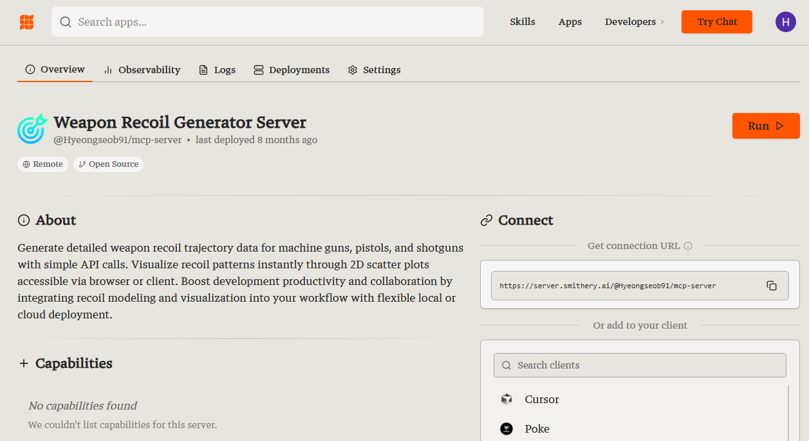
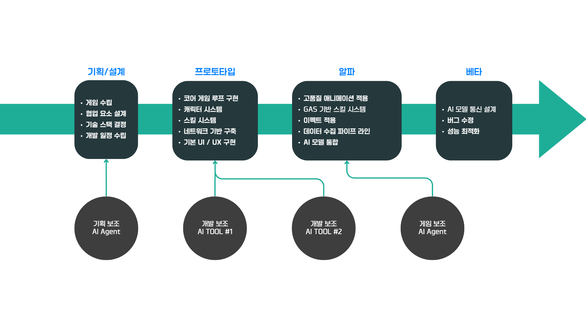
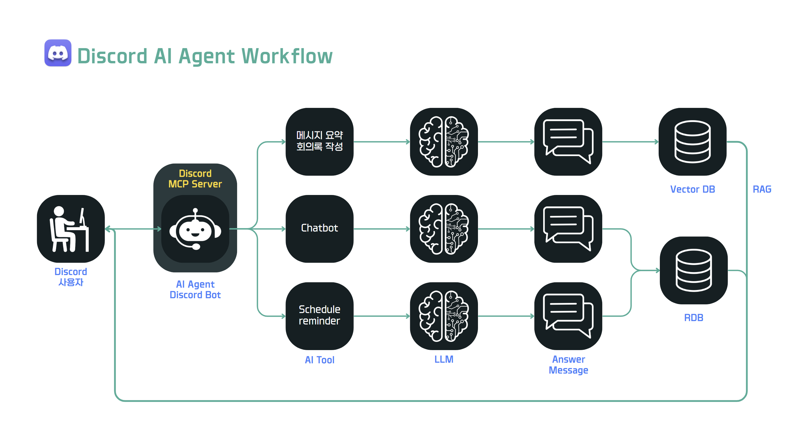
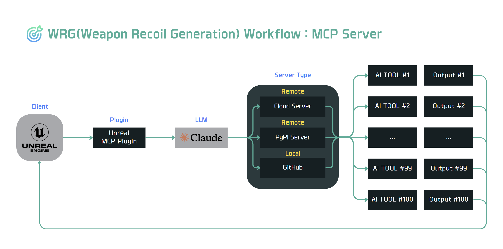
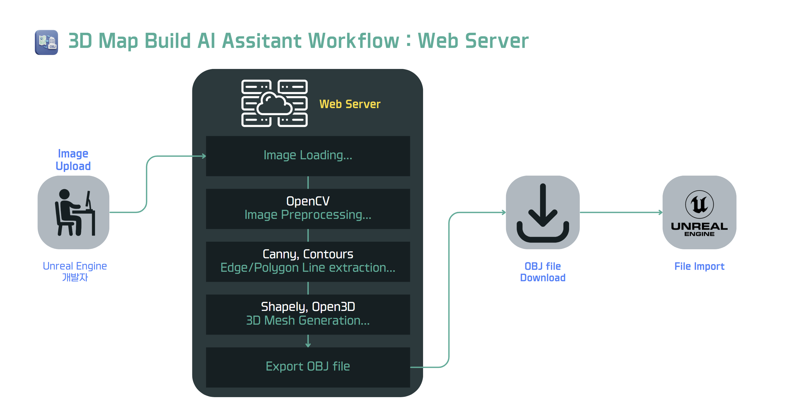
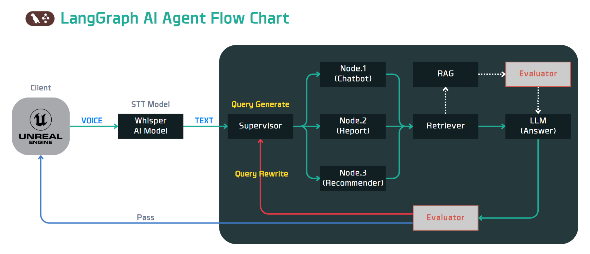
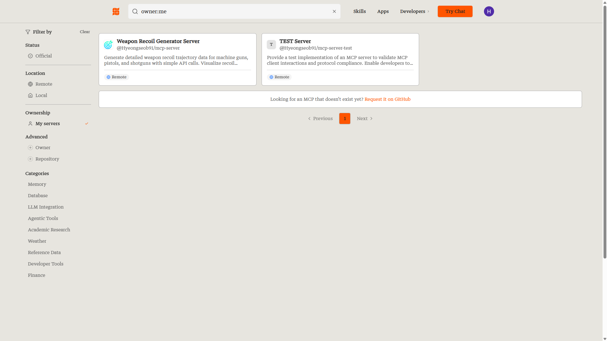
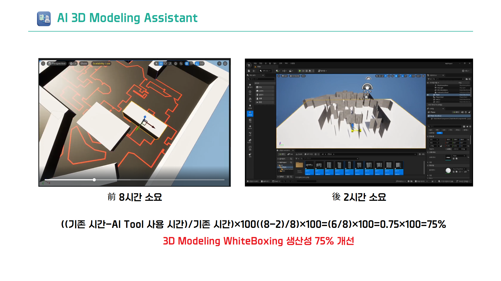

VALORITHM - MCP 기반 게임 개발 AI 시스템
Problem
FPS 게임을 개발하면서 가장 큰 Bottle Neck은 단순 반복 작업이었습니다.
예를 들어 총기 하나의 반동 패턴을 설정하는 데만 40분 가량이 걸렸고, 기획자가 "좀 더 위로 튀게 해주세요"라고 요청하면 개발자는 다시 수치를 조정하고 테스트하는 과정을 반복해야 했습니다.
3D 맵 화이트박싱의 경우 시야각 확인, 사물 배치 등의 커스텀을 거치면 한번의 맵 빌딩마다 8시간 가량의 시간이 소요되었습니다.
그래서 저희는 이런 반복 작업을 AI로 자동화하여 개발자 리소스 효율화를 통해 회사의 기회비용을 창출하고, 개발자 본인도 작업에 더 집중할 수 있는 환경을 구축하는 목표로 시작하였습니다.
Solution
What We Built
- 새로운 게임 출시를 위한 기획 & 개발을 지원하는 3가지 AI 도구 설계 및 구축
- MCP(Model Context Protocol) 기반 도구 통합으로 자연어 명령 지원
- LangGraph + STT 기반 인게임 AI Agent "Javis" 구현
Core Value
MCP 도구와 AI Agent를 프로젝트 전반에 통합하여 기획부터 플레이까지의 워크플로우를 지능화하고, 단순 반복 작업의 제약 없이 누구나 아이디어를 즉시 구현할 수 있는 새로운 게임 개발 패러다임을 제시합니다.
주요 성과
- 총기 반동 궤적 생성 시간 — 40분 → 30초 (약 98.7% 단축)
- 3D 맵 화이트박싱 시간 — 8시간 → 2시간 (약 75% 단축)
- MCP Server 배포 — Smithery.ai 마켓플레이스 공개 배포
- 3가지 AI 도구 통합 — Discord Agent + Recoil Generator + 2D→3D Map Generator
- MCP 표준 기반 — IDE 및 외부 LLM 환경과 도구 호환성 확보

AI Tools Overview
1. Discord MCP Agent

- 회의록 자동 요약 및 일정 리마인더
- Claude API + Discord MCP Server 연동
- Oracle RDB + ChromaDB 이중 저장소
2. Weapon Recoil Generator

- 자연어 명령으로 총기별 반동 궤적 자동 생성
- NumPy 기반 3단계 사격 패턴 (초탄/중탄/후탄)
- Matplotlib 시각화 → Unreal Engine 즉시 적용
3. 2D to 3D Map Generator

- 2D 이미지 한 장으로 3D Mesh(.obj) 자동 생성
- OpenCV Canny Edge + Shapely/Open3D 활용
4. Javis AI Agent - PoC

- LangGraph + STT 기반 인게임 AI Agent "Javis" 설계
- 개발 일정 상 PoC 수준의 간단한 구축만 Test 진행, 실제 게임에는 미적용
What I Built & Technical Deep Dive
MCP 기반 AI 시스템 설계
- Claude와 Unreal Engine을 연결하는 MCP(Model Context Protocol) 서버 구축
- FastMCP 라이브러리를 이용한 서버 사이드 도구 등록 및 스키마 자동화 구현
- 오픈 소스 "Unreal MCP Plugin"을 통한 엔진 직접 연동 지원
Weapon Recoil Generator 개발
- NumPy 기반의 3단계(초/중/후탄) 사격 반동 가중치 알고리즘 설계 및 구현
- np.cumsum() 연산을 통한 연속적인 총기 궤적 좌표 계산 로직 적용
- - 초탄: X축 최소 흔들림, Y축 수직 반동 집중
- - 중탄: 안정화 구간, 균일 분포 적용
- - 후탄: X축 강한 흔들림, 제어 난이도 상승
- Unreal MCP Plugin을 연동하여 엔진 내 에셋 즉시 반영 워크플로우 구축
LangGraph Agent 검증 (PoC)
- TypedDict를 활용한 에이전트 상태 관리 및 멀티턴 대화 로직 설계
Metrics & Impact
정량적 성능 개선
- 총기 궤적 생성: 40분 → 30초 (약 98.7% 시간 단축)
- 3D 화이트박싱: 8시간 → 2시간 (약 75% 시간 단축)
엔지니어링 의사결정
- MCP 표준 채택: IDE 및 외부 LLM 환경과의 도구 호환성 확보
- LangGraph 도입: 복잡한 조건 분기가 필요한 대화 흐름의 가시성 및 제어권 확보
- 기회비용 창출: 단순 반복 작업의 자동화로 핵심 개발 리소스 확보
성과 및 회고
주요 성과

1. smithery.ai에 배포된 MCP Server
2. 3D Map building- 별도의 회의록 작성 없이도, Discord 채팅 기록을 자동 요약하여 매일 오전 10시 마다 공유
- 총기 궤적 생성 40분 → 30초 (약 98.7% 시간 단축)
- 3D 화이트박싱 8시간 → 2시간 (약 75% 시간 단축)
- MCP 표준 기반 도구 호환성 확보로 IDE/외부 LLM 환경 통합
- 📎 시연 영상 확인하기 (Canva)
시행착오
처음 MCP 도구를 설계할 때, Unreal Engine과의 연동 방식을 잘 모르던 상태였습니다. 그러던 중 오픈 소스 "Unreal MCP Plugin"을 발견했고, 이를 활용하여 엔진 내에서 직접 Remote 형식의 도구를 호출하는 방식으로 시스템 설계를 진행하였습니다.
그러나 문제는 여기서부터 시작이었습니다. 해당 Plugin의 경우 미국의 대학생이 개발한 개인 프로젝트였기 때문에 사실상 완성된 기능이 아니었고, 연동을 여러차례 도전했지만 결국 언리얼 엔진과 MCP 서버 간의 Remote 통신을 구현 할 수 없었습니다.
결국 저희는 Local 통신으로 시스템 설계를 변경하여 계획을 수정하게 되었습니다.
이 경험을 통해 오픈 소스 활용 시, 반드시 사전 검증 단계를 거쳐야 한다는 점과, 예상치 못한 상황에 유연하게 대처하기 위해서는 기본적인 엔지니어링 능력을 갖춰야, 대안을 내놓을 수 있다는 중요성을 다시금 깨닫게 되었습니다.
기술적 성장
보통은 남들이 개발해서 배포한 MCP 도구를 호출하여, 프로젝트에 적용하는 경우가 많다고 생각합니다. 하지만 저는 이번 프로젝트를 통해 MCP 서버를 직접 설계하고 구축하는 경험을 하면서, 내부 동작 원리와 프로토콜에 대해 이해도가 높아졌습니다.
그리고 개인적으로 가장 큰 소득이라고 느끼는 '서버'의 역할에 대해서 이해하는 과정이었다고 생각합니다.
특히, 제가 배포했던 Smithery.ai 마켓플레이스의 경우 자체 서버를 제공하면서 개발자들을 유도했었는데, 개발 당시에는 장점에 대해서 체감하지 못하다가 배포가 끝난 후에야 이해하게 되었던 기억이 있습니다.
이를 통해서 유지/보수 관점에서 서버를 바라보는 시각을 가지게 되었고, 확장 가능한 설계란 무엇인지 서버의 개념을 통해 이해하는 계기가 되었습니다. 다음 프로젝트부터는 시스템 아키텍처 설계 단계부터 Infrastructure as Code의 개념을 접목시켜서, 더 나은 시스템을 구축할 수 있을 것 같습니다.